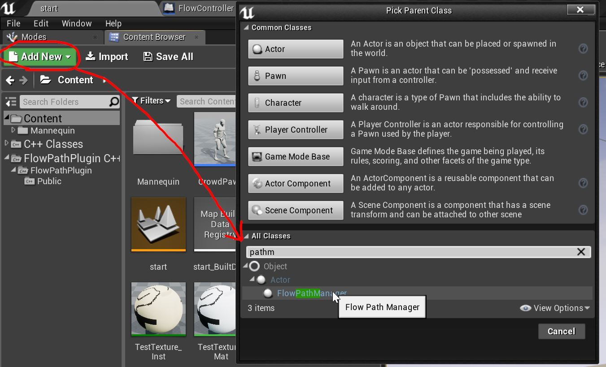
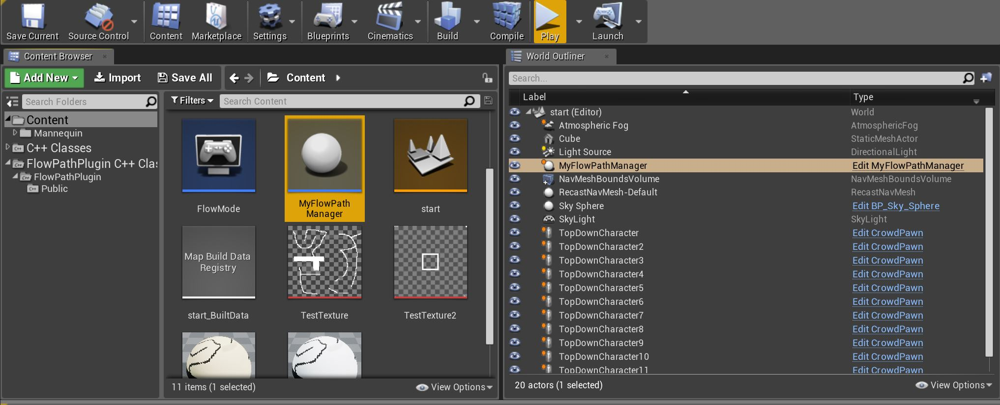
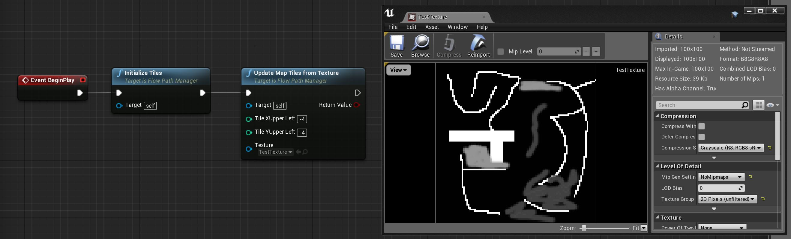
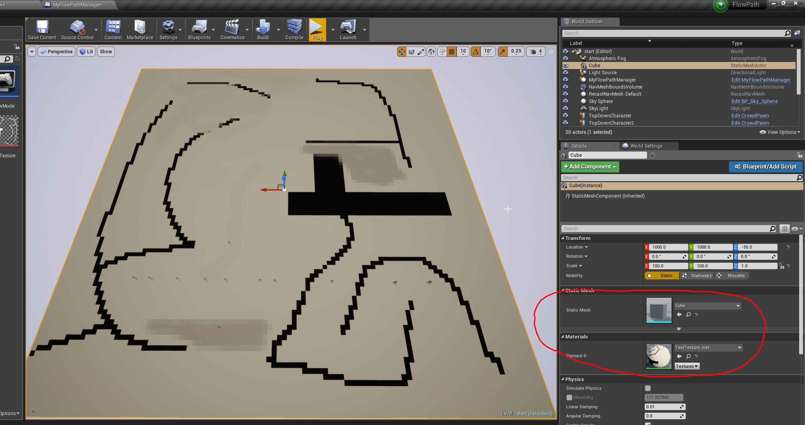
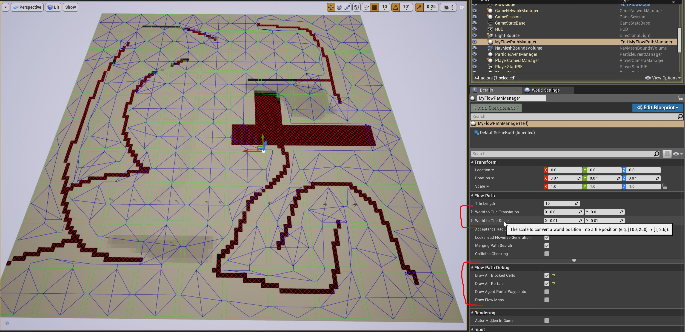

Documentation
This is a tutorial meant to give an introduction for the UE4 flow path plugin, which can be purchased here.
Just use the Unreal Engine Launcher, where the plugin should be available in your library after the purchase. If you only have an archive file then extract it to your engine's plugin folder, e.g.
C:\Program Files (x86)\Epic Games\4.18\Engine\Plugins.
You can also add the plugin directly to your project (e.g. when you want to adjust the source code of the plugin). To do that, create a "Plugins" folder in your project folder (where your .uproject file is) and drop the plugin in there.
After the installation, you should see the plugin in your engine's plugin view, like this.
The following gives an overview of the plugin's features and how to use them.
This plugin features an advanced pathfinding algorithm to steer a large amount of agents through a dynamic environment with minimal performance cost.
# TODO add some explanations
Requirements
Before the plugin can be used, make sure that you can check off all of the following points:
Getting started
The central class of the plugin's API is FlowPathManager, which has to be instanciated as an actor in the level.
To do that, create a new blueprint or C++ class that extends FlowPathManager:

Next, give your custom manager a fancy name and add it to the level:

When the game begins (and every time you want to change the tile size during the game), the manager must be initialized.
During the initialization, the manager prepares the necessary data structures, creates threads for async flowmap generation and reads the config parameters.
After the initialization, the manager can be filled with surface data (more on that later).
In this example, I initialize the manager after the game begins and initialize it from a greyscale texture:

To represent my level's geometry, I added a simple flat mesh to the level and slapped the surface cost texture on it (just imagine the black parts to be crates and walls):

It is important to check that the manager's internal representation of the data is in sync with the real world space.
This means that the manager's WorldToTileTranslation and WorldToTileScale
properties must be set correctly to convert world coordinates into tile coordinates.
You can easily check if that is the case by enabling the debug draw options on the manager.
This will draw the tiles, their connections (portals), the blocked cells and optionally even more.
The following example shows how the debug drawings align with the level geometry:

Cells can have a cost value between 1 and 255 (0 is reserved and not allowed). A value of 1 means almost free traversal and 254 has the highest traversal cost possible. For example, an agent would rather cross 99 tiles of cost 1 than 1 tile of cost 100. A value of 255 means that a cell is blocked and cannot be traversed.
It is advisable to avoid very sharp jumps of cost values and have instead cost gradients. See the above example: the easy to traverse cells never directly touch the blocked cells, but have a gradient of hard to traverse cells instead. This leads to more naturally looking paths (you don't try to hug any walls while walking) and prevents agents from colliding easily with blocked areas. Depending on the velocity of the agents, the "buffer zone" of high-cost cells around a blocked area can even be more than one cell wide.
At the start of the game, you supply the FlowPathManager with all the individual tiles. The data for each tile is given as a continuous array of values between 1 and 255. During the game, new tiles can be added or existing tiles updated. Note that single cells cannot be directly updated, it is only possible to replace complete tiles. To update a single tile, use the methods UpdateMapTileWorld() or UpdateMapTileLocal() on a FlowPathManager instance.
If the map data is known at development time (i.e. the map is not procedurally generated) then one very convenient way to provide the data is via texture. This has the added benefit that the cost data can be inspected and manipulated with software such as GIMP. That way you can also easily add effects such as blurring to the cost data to give the map a more natural feel. To create the surface data from a texture, use the method UpdateMapTilesFromTexture() on a FlowPathManager instance.
The NavAgent is the interface implemented by actors that want to move around with the help of the plugin. It allows the FlowPathManager, once registered, to obtain information about the agent's state and update it with movement input. For example, the UFlowPathComponent pawn component implements the NavAgent interface to control and navigate pawns.
The following gives a detailed view of the options and methods for the NavAgent interface:
The FlowPathManager is the main interface to control the plugin's functions. It handles the surface data, path generation and updates the registered agents each tick with new movement input.
The following gives a detailed view of the options and methods for FlowPathManager:
See the following example, where each letter is a different tile:
|A|B|C| Agent wants to go from tile A to tile I. +-+-+-+ Calculated tile path: A -> B -> E -> F -> I |D|E|F| +-+-+-+ |G|H|I|Without the lookahead flowmap generation, an agent standing on tile A will always go just right, because the next tile on its path is tile B to the right. With the lookahead flowmap, the agent will try to go directly to tile E (which comes after B as a waypoint) and so goes down and to the right. To generate this lookahead flowmap, data from tiles A, B, D and E is necessary (instead of just A).
I was inspired by the following excellent articles and papers when creating the plugin:
{kind=link}